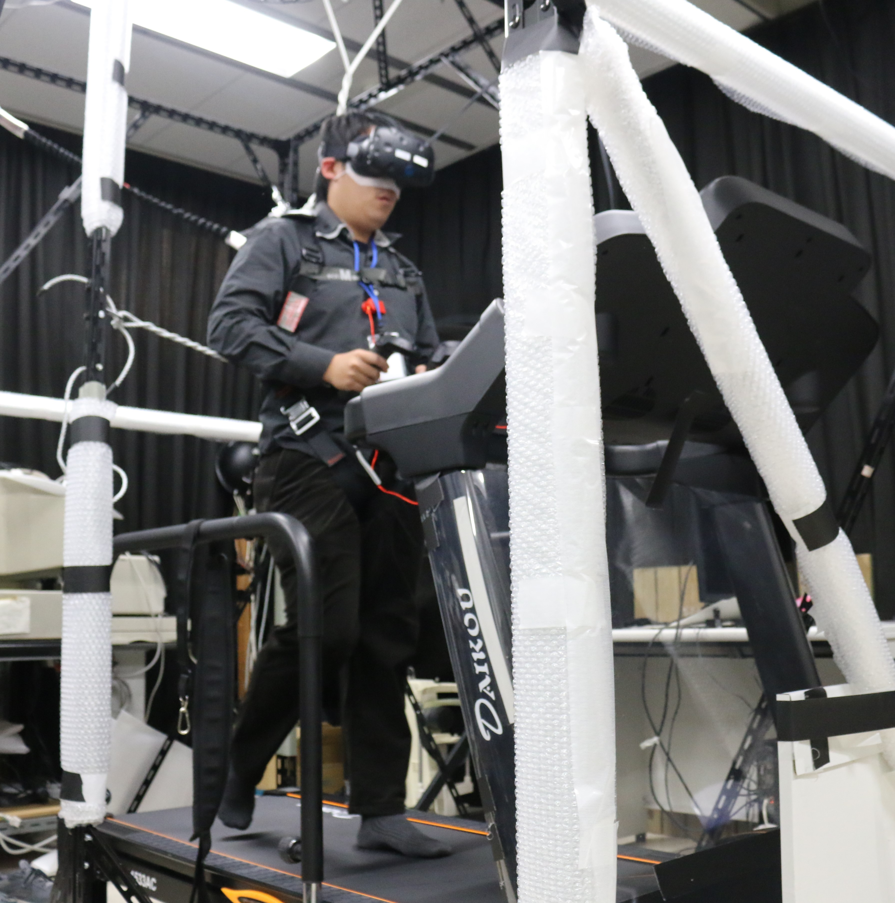
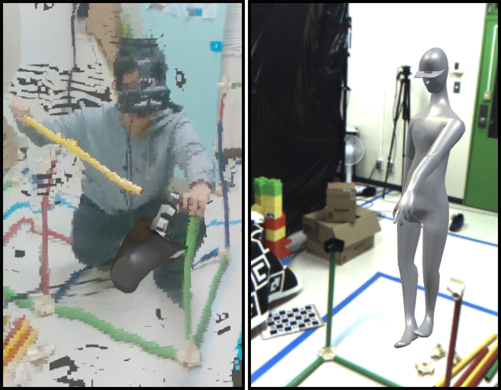

Research Interest
CSCW
Human Computer Interaction
Machine Learning
VR/AR
Remote Collaboration
一対多遠隔協調作業

VR環境における視覚情報と固有受容情報の統合 Integration of Visual and Proprioception Information in Virtual Reality
近年、より多くの人工現実感（VR）アプリケーションで、ゲームコントローラーだけでなく実空間での身体の動きにより、VR環境内での自らの動きを制御できるようになってきた。この場合，実空間から得られた固有受容情報とVR環境から得られた視覚情報を統合する必要がある。 本プロジェクトでは，人がどのようにこれらの情報を脳の中で処理するのかを明らかにする。
論文 Publication
- Tzu-Yang Wang, Hiroyasu Ujike. Exploring Perceived Amplitude of Roll and Pitch Rotation while Walking on a Treadmill and Standing Still, 7th International Symposium on Visually Induced Motion Sensations (VIMS 2020), Online, 2020.
- Tzu-Yang Wang, Hiroyasu Ujike, Shigehito Tanahashi. Effects of Active Self-motion on VR Sickness Induced by Visual Motion Perpendicular to Self-motion, International Display Workshops 2020, Online, 2020.
- 王 子洋, 氏家弘裕. VR環境での距離手がかりが歩行速度知覚に及ぼす影響, 立体映像技術研究会（3DIT）, 2021.3, オンライン.
拡張現実に基づく遠隔協調作業における身体具現化の効果 Effect of Embodiment on Remote Collaboration
In this project, we investigated how embodiment level influences AR-based remote collaboration.

論文 Publication
- Tzu-Yang Wang, Yuji Sato, Mai Otsuki, Hideaki Kuzuoka, Yusuke Suzuki. Effect of Body Representation Level of an Avatar on Quality of AR-Based Remote Instruction. Multimodal Technologies Interact. 2020, Volume 4 Issue 1, 3.
- Tzu-Yang Wang, Yuji Sato, Mai Otsuki, Hideaki Kuzuoka, Yusuke Suzuki. Effect of Full Body Avatar in Augmented Reality Remote Collaboration, 2019 IEEE Conference on Virtual Reality and 3D User Interfaces (VR), Osaka, Japan, 2019, pp. 1221-1222.
音声操作に基づく音声会議における参加者の影響力と説得力の調整 Voice Manipulation for Unbalanced Audio Conference
Unbalanced conferences are always existed in our daily life. In such conferences, due to unequal dominance, only a few people hold the chance to speak, and other people have little chance to express their opinion.論文 Publication
- Tzu-Yang Wang, Ikkaku Kawaguchi, Hideaki Kuzuoka. Effect of Voice Amplitude on Audio Conference, TAICHI, 2017.08, Taiwan
- Tzu-Yang Wang, Ikkaku Kawaguchi, Hideaki Kuzuoka, Mai Otsuki. Investigating how amplitude and frequency affect dominance and persuasiveness, HIシンポジウム, 2018.9, つくば
- Tzu-Yang Wang, Ikkaku Kawaguchi, Hideaki Kuzuoka, Mai Otsuki. Effect of Manipulated Amplitude and Frequency of Human Voice on Dominance and Persuasiveness in Audio Conferences, PACMHCI, Volume 2 Issue CSCW, 2018.11. [acceptance rate: 26%]